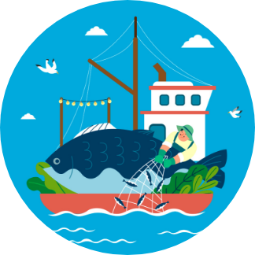

수산자원보호 직불제

- 수산자원보호 직불제란?
-
수산업‧어촌의 공익기증 증진을 위해 "수산자원의 적극적 보호활동을 지원" 하여,
지속가능한 어업구조로 전환을 가속화
지원대상
수산자원의 지속가능한 이용을 위하여 휴어 등 강화된 자원보호 의무를 이행하는 어업인 등과 「수산업법」제41조에 따른 허가를 받은「상법」상 회사
신청자격 및 요건
- 「농어업경영체 육성 및 지원에 관한 법률」(이하, 농어업경영체법) 제4조제1항제2호에 따라 어업경영 관련 정보 등을 등록한 어업인 등과 「수산업법」제41조에 따른 허가를 받은「상법」상 회사(이하, 어업인 등)
- 직불금 신청일로부터 지급일까지「농어업경영체법」제4조제1항제2호에 따라 어업경영 관련 정보 등이 등록되어 있을 것(어업경영체 등록이 불가한 상법상 회사는 제외)
- 직불금 신청일로부터 지급일까지 어업허가가 유효할 것
-
「수산직불제법」시행령 제6조에 따라 해양수산부장관이 정하여 고시하는 준수의무 중에서 기본의무와 2개 이상의 선택의무
이행계획서를 제출하고, 이행점검절차 종료일까지 이를 이행할 것
- - (기본의무) 총허용어획량 할당
- - (선택의무) ①일시적‧자율적 조업중단, ②어선감척, ③해양쓰레기 수거, ④그 밖의 의무
* 선택의 무 중 ’어선감척’은 근해어업에 한해 평가대상에는 포함되나 선택의무 이행계획 수에서는 제외되며, ‘생분해성 어구 사용’ 등은 ‘그 밖의 의무’에 포함하고 ‘그 밖의 의무’ 내 항목 중 다수를 설정하더라도 선택의무 이행계획 수는 1개로 간주
- 조업일수 산정기간(22.10.1. ~ 23.9.30.) 내 조업일수가 60일 이상일 것
지급 제한
-
「수산직불제법」제19조에 따른 공익직접지불금 수령을 위한 다음 준수사항을 이행하지 않은 경우
- -「수산직불제법 시행령」제12조에 따른 교육을 이수하지 않은 경우
- -「수산업법」등 수산 관계 법령을 준수하지 않은 경우
- -「수산직불제법 시행령」제14조 및 별표 1의3 공익직접지불금 수령을 위한 준수사항을 이행하지 않은 경우
지급 제외
-
감척대상 어선(감척관련 행정절차가 진행 중인 어선과 신청서 제출이후 감척대상에 포함된 경우 포함)
* 신청서 제출 이후 감척대상 포함 구성원(어선)은 의무이행 점검대상에서 제외
- 거짓이나 그 밖의 부정한 방법으로 공익직접지불금을 신청 또는 수령한 경우
- 공익직접지불금을 수령하기 위해 거짓이나 그 밖의 부정한 방법으로 어업경영체에 등록한 경우
- 관계 공무원 등의 조사 등에 성실히 협조하여야 하나, 정당한 사유 없이 이를 거부·방해하거나 기피하는 경우
- 착오 또는 경미한 과실로 사실과 다르게 신청하거나 잘못 수령한 경우
-
「해양수산부 국고보조금 관리에 관한 규정」제13조4항 및 제23조1항의 각호에 해당하는 사람은 선정 및 보조금 교부 제외
▶ 해양수산부 국고보조금 관리에 관한 규정
-
제13조(보조사업자 선정기준) ④ 사업담당부서의 장은 보조사업자가 다음 각 호에 해당하는 경우 보조사업자 선정에서 제외하여야 한다.
- 1. 보조금법 제31조의2에 따라 보조사업 또는 간접보조금의 수행대상에서 배제되거나 보조금 또는 간접보조금의 교부를 제한받은 경우
- 2. 제16조제1항에 따라 중복수급에 해당되는 경우
-
제23조(보조금 교부조건) ① 사업담당부서의 장은 보조금법 제18조에 따라 교부조건을 붙이는 경우에 보조사업자가 다음 각 호에
해당하는 행위를 하는 경우, 보조금 교부결정의 전부 또는 일부를 취소할 수 있음을 명시하여야 한다.
- 1. 허위의 신청이나 그 밖에 부정한 방법으로 보조금을 교부받은 경우
- 2. 보조금을 다른 용도에 사용한 경우
- 3. 보조사업자가 법령의 규정, 보조금의 교부조건의 내용 또는 법령에 따른 해양수산부장관의 처분에 위반한 경우
- 4. 해당 보조금 지원과 직접 관련된 전제 조건이 사후에 충족되지 아니하는 경우
- 5. 동일 또는 유사한 사업계획으로 다른 기관으로부터 중복하여 보조금을 받은 경우
-
제13조(보조사업자 선정기준) ④ 사업담당부서의 장은 보조사업자가 다음 각 호에 해당하는 경우 보조사업자 선정에서 제외하여야 한다.
지급 금액
- 소규모어선직불금(2t 이하) : 어선 1척당 150만원 정액 지급
-
톤수비례직불금(2t 초과) : 어선 1척당 톤수비례직불금 지급단가의 구간별 단가에 따라 톤수별*로 차등 지급, 구간별 해당 톤수에
기준 단가를 곱하고 구간별 금액을 합산하여 산정
* 선단조업 : 선단을 이루어 조업하는 업종은 본선의 톤수를 기준으로 지급하되, 허가받은 어선(본선) 외에 부가하여 허가받은 ‘부속선’의 톤수는 10%만 인정
-
지급상한톤수 : 수산자원보호 직불금의 지급상한톤수는 개인은 최대 90톤(6,000만원), 법인은 최대 140톤(9,250만원)으로 한정
* 개인 또는 법인이 여러 척의 어선을 참여하여 합산 톤수가 지급상한 톤수를 초과한 경우에도 직불금 지급은 지급상한톤수를 초과할 수 없음
어선 1척당 150만원 정액 지급
톤수별 구간에 따라 상이함
개인 최대 90t
6,000만원
6,000만원
법인 최대 140t
9,250만원
9,250만원
사업추진 절차
* 동 일정은 이행점검 상황 등에 따라 변경될 수 있음
-
~3월
 1. 사업 준비
1. 사업 준비 -
4월 ~ 5월
2. 신청·접수 -
~7월
 3. 사업자 선정
3. 사업자 선정
-
7월 ~ 10월
4. 이행·점검 -
~익년 1월
 5. 자금배정 및 집행
5. 자금배정 및 집행 -
~익년 2월 ~ 6월
 6. 사업정산
6. 사업정산